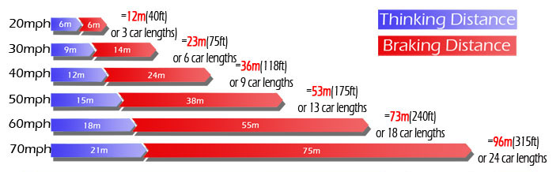

Always maintain the appropriate stopping distance from the vehicle in front.
It is good practice to remember the stopping distance for various speeds but a simpler method of judging the gap, whilst driving, is to use the two second rule. When the vehicle ahead passes a stationary object, say to yourself “only a fool breaks the two second rule”. Because it takes about two seconds to speak this sentence, you should finish it before, or as you arrive at the chosen object.
In wet conditions, this distance can be doubled and in icy conditions extreme caution must be used as stopping distances can be as much as ten times further. Other factors to consider are:
- The condition of the road surface, (gravel, wet leaves, mud),
- Visibility (fog, snow smoke),
- Whether you’re travelling up or downhill
- The quality and condition of your brakes and tyres
- Your ability as a driver (tiredness can affect your reaction time).
Adjust your distance accordingly.
As you check your mirrors, you may notice traffic following too closely. The danger, then, is that if you need to brake suddenly, the following vehicle may run into the back of you. Guard against this by allowing a little extra space from the traffic in front and planning well ahead. When you need to slow or stop, smoothly decelerate showing your brake lights early. Do not react by speeding up, they will only speed up with you.
The diagram below illustrates typical stopping distances, from the moment you realise you must brake to the moment you stop. The video illustrates why they're significant!

Video contains graphic content